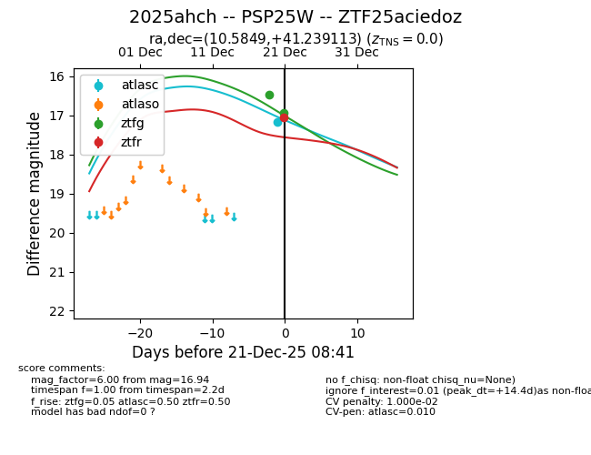
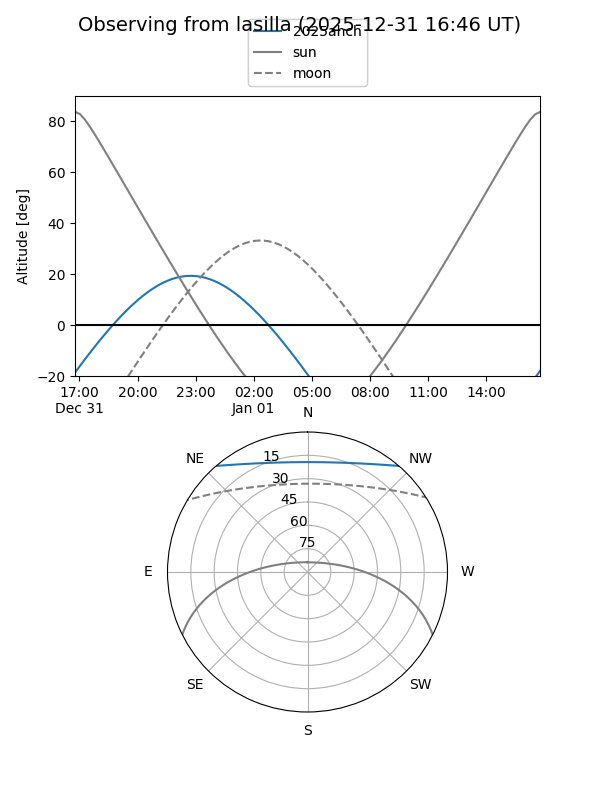
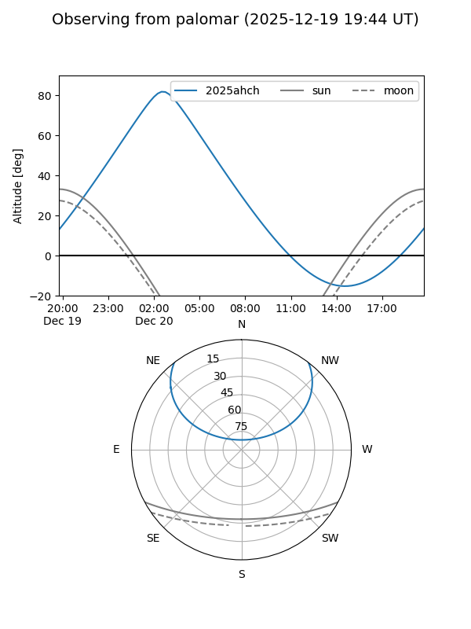

2025ahch
Target 2025ahch at 2026-01-09 12:49
Aliases and brokers:
FINK: link
Lasair: link
ALeRCE: link
TNS: link
YSE: link
alt names
ZTF25aciedoz (ztf,fink_ztf)
2025ahch (tns,yse)
PSP25W (panstarrs)
Coordinates:
equatorial (ra, dec) = 10.5849,+41.23911
equatorial (HMS+DMS) = 00:42:20.38,+41:14:20.81
galactic (l, b) = (121.0925,-21.60014)
Flags:
likely cv
Photometry:
last ztfg=16.94, ztfr=17.06
2 ztfg, 1 ztfr detections
Lightcurve

Visibility


Additional plots